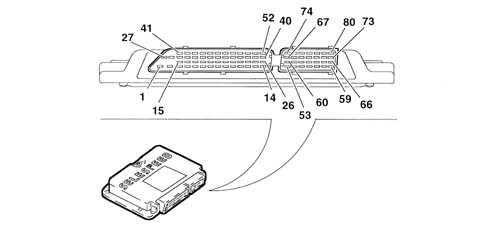
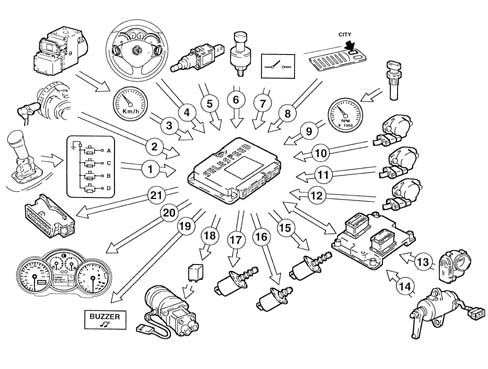
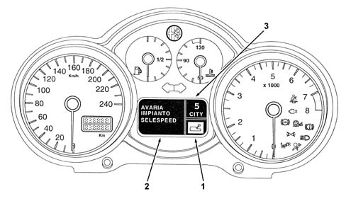
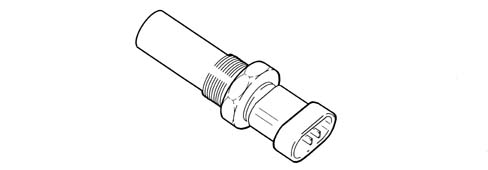
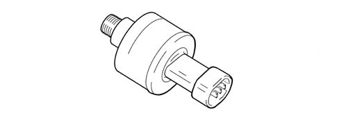
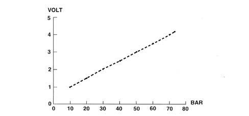
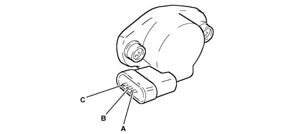
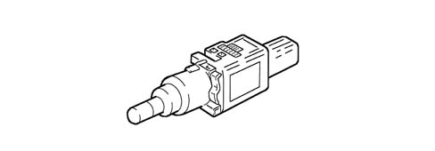

2127E electric speed selection system
- Path
- Descriptions > 21 GEARBOX > 2127 ELECTRO-HYDRAULIC SELECTION. GEARBOX EXTERNAL. CONTROLS > 2127E electric speed selection system
- Kind
- system description
- Applies to
- engines: 2.0 TS, 3.2 V6; all production periods
- Interactive page
- https://sloeber94.github.io/elrnDB-a147/en/#/3022471
Applies to: engines: 2.0 TS; all production periods; only with equipment: Cambio robotizzato
CONSTRUCTION FEATURES
Electronic control
It is fitted in the passenger compartment under the dashboard on the passenger side.
The CFC 208F control unit communicates with the injection control unit through a CAN line and is fitted with a tester line.
PIN OUT

1 - Earth 2 - Earth 3 - EV4 gear + selection actuator solenoid from 4 to 25 - Not connected 26 - Gear selection bit 0 27 - Power source (+30) 28 - Ignition-operated power source 29 - On-off solenoid EV3 controlling selection actuator 30 - Not connected 31 - Pump relay feed 32 - Solenoid EV1 controlling engagement actuator 33 - CAN L line 34 - Not connected 35 - Not connected 36 - Car speed 37 - Not connected 38 - Gearbox input rpm sensor + 39 - Gear engagement position sensor 40 - Pressure sensor 41- Not connected 42 - Ignition relay control 43 - Solenoid EV0 controlling clutch actuator + 44 - Solenoid EV2 controlling gear engagement actuator + 45 - CAN H line 46 - Not connected 47 - Not connected 48 - Engine rpm 49 - Tester line K 50 - Gear input rpm sensor - 51 - Gear selection position sensor 52 - Clutch position sensor from 53 to 66 - Not connected 67 - Speed selection bit 1 68 - Speed selection bit 3 69 - Brake pedal switch 70 - Not connected 71 - Not connected 72 - Display data control output 73 - Gear engagement position sensor power source 74 - Speed selection bit 2 75 - Speed selection bit 4 76 - Ignition signal (+50) 77 - CITY switch 78 - Door button 79 - Clutch position sensor power source (+5V) 80 - Buzzer output control
The control unit performs the task of:
- receiving signals from the various sensors;
- interfacing with the injection control unit (via the CAN C line);
- controlling the hydraulic system;
- interfacing with the instrument panel (via the CAN line);
- managing the buzzer.
The control unit uses the following signals for the management of these strategies:
- engine rpm (from the injection control unit via the CAN C line);
- transmission input rpm sensor;
- clutch position sensor;
- selection position sensor;
- shift position sensor;
- accelerator pedal potentiometer/motorised throttle (from injection control unit via CAN C line);
- vehicle speed (from ABS via CAN C line);
- ignition key;
- driver's door switch;
- brake pedal switch;
- hydraulic unit fluid pressure.
OPERATTION
DIAGRAM OF INPUT/OUTPUT INFORMATION FROM THE CONTROL UNIT

1 - Gear selector lever switches 2 - Engine rpm sensor 3 - Vehicle speed (via A.B.S. control unit CAN line) 4 - Gear selector levers 5 - Brake pedal (dual) switch not earthed 6 - Oil pressure sensor 7 - Driver's side door switch 8 - CITY button 9 - Gear input rpm sensor 10 - Clutch position sensor 11 - Speed selection position sensor 12 - Shift position sensor 13 - Built-in throttle body DVE (CAN line) 14 - Accelerator pedal potentiometer (CAN line) 15 - Proportional pressure solenoid (no. 2) 16 - On-off solenoid (2) 17 - Proportional flow solenoids 18 - Electric pump 19 - Buzzer 20 - Control panel 21- Diagnostic socket
Operating strategy
Turning on the system
When the ignition key is turned, the system tells the driver which speed is engaged via a display on the control panel. Once the warning light has gone out, it is ready to accept gear changes made using the gear selection lever.
Operation with engine off
For safety reasons, the gear can be changed using the selection lever only with the brake pedal pressed.
Engine start-up
The engine may be started with a gear engaged or with the gearbox in neutral.
After start-up, the transmission switches automatically to neutral (indicated by the letter N on the display) and the system selects semiautomatic operation mode (manual).
The car can be push-started as follows:
- Turn the ignition key to the ON position
- Check the warning light has gone off (after 10 seconds);
- with the car running at a certain speed and the gearbox in neutral, shift up a gear (+) using the selection lever.
Take-off
Take-off is possible in 1st, 2nd and reverse according to specific clutch closure maps in the control unit.
For safety reasons, the above gears can be selected using the selection lever (steering wheel controls are not active until the car is running at 10 km/h) only with the brake pedal depressed or with the car at a standstill in the case of reverse.
When the driver depresses the accelerator pedal, the car takes off and the system closes the clutch progressively to move the car.
The driver may adjust the transmitted torque by operating the accelerator pedal.
When engine rpm and clutch rpm are the same, the clutch is fully closed.
During take-off, the driver may request a gear change (it is advisable to release the accelerator pedal to avoid rapid interruption of the torque transmitted by the clutch).
Engine brake on descents
With the car on a descent, gear engaged, accelerator pedal released and car speed increasing over a set level, the clutch is automatically reclosed to provide the necessary engine braking effect.
If the driver operates the accelerator pedal during this stage, clutch closure obeys a map stored in the transmission control unit.
Slowing down
When the car is slowing down, e.g. after releasing the accelerator pedal, the system automatically re-opens the clutch to prevent the engine stalling.
The clutch re-opens at an engine speed computed on the basis of:
- engine rpm.
- deceleration level (based on engine rpm)
- brake pedal pressed/not pressed.
When slowing down, if the speed is higher than 3rd, the transmission automatically shifts down.
When the car stops, 1st gear is engaged automatically.
Manual gear shifts - semiautomatic operation
Semiautomatic mode is set:
- automatically whenever the car is started;
- when the driver operates the gear lever or buttons while in CITY mode;
- when the driver presses the CITY button again while in CITY mode.
The system will accept an shift up or shift down request with the car in motion and clutch fully closed only if it is compatible with the current rpm range.
Normally a gear lever or button command (with car speed more than 10 km/h) will trigger only one upward or downward shift.
Once a gear shift request has been accepted, the shift is carried out according to an automatic sequence that reflects actual driver behaviour.
- engine torque reduction (by reducing advance/closing throttle) and simultaneous clutch opening;
- current gear disengaged, new gear selected and engaged. The engine (CUT OFF) is controlled in parallel, to increase engine rpm to the same level as clutch rpm following engagement of the new gear;
- modulated clutch closure and simultaneous gradual return to maximum possible torque delivery by the engine. When engine rpm and clutch rpm are the same, the clutch is fully closed.
Gear changes become faster with the accelerator pedal pressed through at least 60% of its travel and car speed greater than 5000 rpm.
A current gear shift request may be interrupted at any time by a new request by the driver, provided it is compatible with the current engine rpm range.
If the gear shift is not successful, it is repeated a second time from neutral. The gear above the one originally requested is then engaged.
City mode - automatic shifting
The speed is selected on the basis of a single control unit map on the basis of:
- accelerator pedal position
- vehicle speed.
- optimum gear (based on the accelerator pedal position)- brake pedal position.
If the accelerator pedal is released, the system does not shift up a speed in order to maintain an engine braking effect.
Gears are shifted in exactly the same way as during semiautomatic operation. The same transmission and engine control parameters are used.
Request to shift to neutral
This request takes precedence over all other gear shift requests.
With the engine off, hold down the brake pedal to engage neutral.
With the car in motion, neutral cannot be engaged when the car is travelling at more than a given speed (40 km/h)
Turning off the engine and deactivating the system
When the ignition key is turned off, the engine goes off but the Selespeed system stays active until the car comes to a complete standstill.
The hydraulic section is deactivated 2-4 seconds after the ignition is turned off and the gear display goes off immediately after. Only at this point is the Selespeed system deactivated.
The speed selected before the engine is turned off remains engaged.
When the engine is turned off with the gearbox in neutral, the buzzer attracts the driver's attention so that the car can be made safe by engaging 1st gear or reverse.
In this case, turn the ignition key to MAR and engage 1st or reverse with the brake pedal depressed.
When the buzzer sounds
For safety reasons, the system activates the buzzer when:
- reverse is engaged;
- the car is parked in neutral (the buzzer goes off when the ignition key is turned off).
- the clutch overheats during take off;
- the vehicle moves in the opposite direction to that of the gear engaged.
For safety reasons, with the car at a standstill, engine running and 1st, 2nd or reverse engaged, the system:
- activates the buzzer;
- automatically places the gearbox in neutral when:
- the accelerator pedal and/or brake pedal is not operated for at least 50 seconds;
- the brake is depressed for longer than 10 minutes;
- the driver's door is opened and the accelerator pedal and brake pedal have not been operated for at least 1 second.
- a fault has been detected with the gearbox
Towing the vehicle
Follow the instructions for towing the vehicle.
Make sure that the gearbox is in neutral and follow the same instructions as for a normal vehicle with a manual gearbox given the 'EMERGENCY' chapter in the Owner's Handbook.
If the gearbox cannot be placed in neutral, the vehicle should not be towed.
Recovery
Making the system safe
The control unit is able to identify potentially dangerous situations and make the system safe as a precautionary measure.
The system makes the system safe as follows:
- temporarily stopping a gear shift in progress in the following cases: incorrect selection, clutch not sufficiently open and incorrect gearbox input rpm range;
- immediate engine stop command (via CAN line) with gear engaged, car taking-off/waiting to take off and detection of hydraulic clutch fault giving rise to fast clutch re-closure;
- failure in the control unit which involves: maintaining the pre-existing traction state so that the vehicle does not stop and the opening of the clutch when the vehicle is about to stop.
Faulty operation
When the system detects faults in its components, its operating strategies are reconfigured.
The system adopts the following operating restrictions according to where the fault lies:
- gear lever faulty, the system switches to automatic CITY mode so the car can be driven to the first Authorised Service Outlet;
- clutch solenoid faulty, clutch operation locked with the car at a standstill;
- clutch sensor faulty, clutch control locked with the car at a standstill;
- shift solenoids faulty, gear shift acceptance locked
- selection solenoids faulty, gear shift acceptance blocked;
- shift and selection sensors faulty, gear change times extended and acceptance only of 1st, 2nd and reverse.
- engine, gearbox input and gearbox output rpm sensor faulty, and acceptance only of 1st, 2nd and reverse.
- oil pressure sensor faulty, open loop pump control
- gear selection lever switches faulty, switch to automatic mode.
Faults in the Selespeed system are indicated by the warning light coming on.
If the warning light continues to flash, a fault has been detected in the transmission. At the same time, the buzzer sounds intermittently for 4 seconds.

1 - Selespeed gearbox failure warning light display area 2 - Error message display area 3 - Gear engaged and CITY function activated display area
Gearbox input shaft speed sensor
Electromagnetic, fitted to the gearbox bell housing.

Oil pressure sensor
Active type, fitted to the hydraulic unit.

DIAGRAM

Actuator position sensor
The sensors (potentiometers) that send the gearbox electronic control unit the position of the three actuators (speed selection, speed engagement and clutch control) are fitted to the hydraulic unit.

A - Earth B - Supply C - Signal
Brake pedal switch
Fitted on the pedals, consisting of a dual switch.

Door open switch
Detects when driver side door is open via an on-off switch that earths the circuit and informs the Selespeed control unit that this has occurred.
Buzzer
It is mounted on a bracket near the Selespeed control unit and signals:
- a fault in the system;
- improper use (e.g. clutch overheating);
- car safety (e.g. ignition turned off with car in neutral).
Applies to: engines: 3.2 V6; all production periods; only with equipment: Cambio robotizzato
COMPONENT DESCRIPTION
ELECTRONIC CONTROL UNIT
It is fitted in the passenger compartment under the dashboard on the passenger side.
The control unit communicates with the engine control unit through a CAN line and is fitted with a tester line.
PIN OUT
1. Earth 2. Earth 3. EV4 gear + selection actuator solenoid 4. Not connected 5. Not connected 6. Not connected 7. Not connected 8. Not connected 9. Not connected 10. Not connected 11. Not connected 12. Not connected 13. Not connected 14. Not connected 15. Not connected 16. Not connected 17. Not connected 18. Not connected 19. Not connected 20. Not connected 21. Not connected 22. Not connected 23. Not connected 24. Not connected 25. Not connected 26. Gear selection bit 0 27. Supply (+30) 28. Supply controlled by the ignition 29. Solenoid EV3 controlling selection actuator 30. Not connected 31. Pump relay control 32. Engagement actuator control solenoid EV1 33. CAN line 34. Not connected 35. Not connected 36. Not connected 37. Not connected 38. gear + input rpm sensor 39. Gear engagement position sensor 40. Pressure sensor 41. Not connected 42. Start-up relay control 43. Solenoid EV0 controlling clutch actuator + 44. Solenoid EV2 controlling gear engagement actuator + 45. + CAN line 46. Not connected 47. Not connected 48. Engine rpm 49. Diagnostic line K 50. Gear - input rpm sensor 51. Gear selection postion sensor 52. Clutch position sensor 53. Not connected 54. Not connected 55. Not connected 56. Not connected 57. Not connected 58. Not connected 59. Not connected 60. Not connected 61. Not connected 62. Not connected 63. Not connected 64. Not connected 65. Not connected 66. Not connected 67. Speed selection bit 1 68. Speed selection bit 3 69. Brake pedal switch 70. Not connected 71. Not connected 72. Not connected 73. Gear engagement position sensor power source 74. Speed selection bit 2 75. Speed selection bit 4 76. Ignition signal 77. Auto switch 78. Door button 79. Clutch position sensor power source 80. Buzzer output control
GEARBOX INPUT SHAFT SPEED SENSOR
Electromagnetic, fitted to the gearbox bell housing.
OIL PRESSURE SENSOR
Active type and fitted to the hydraulic actuation unit.
DIAGRAM
ACTUATOR POSITION SENSORS
The sensors (potentiometers) that send the gearbox electronic control unit the position of the two actuators (speed selection and speed engagement) are fitted to the hydraulic actuation unit.
A. Earth B. Power supply C. Signal
CLUTCH POSITION SENSOR
This is fitted on the clutch control actuator and informs the electric control unit of the position of the clutch control actuator.
BRAKE PEDAL SWITCH
This is fitted to the pedal unit and closed when the pedal is pressed to cause the STOP lights to come on and a signal to be sent to the gearbox electronic control unit
DOOR OPEN SWITCH
Detects when driver side door is open via an on-off switch that earths the circuit and informs the Selespeed control unit that this has occurred.
BUZZER
This is built into the control panel and notifies the driver of:
- a fault in the system;
- improper use (e.g. clutch overheating);
- car safety (e.g. ignition turned off with car in neutral).